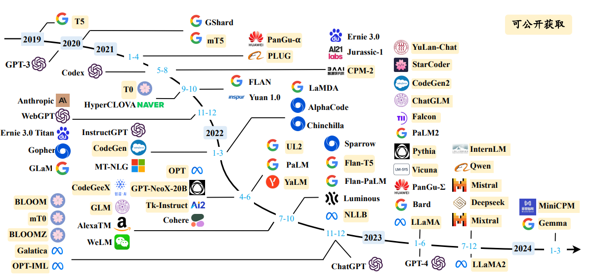
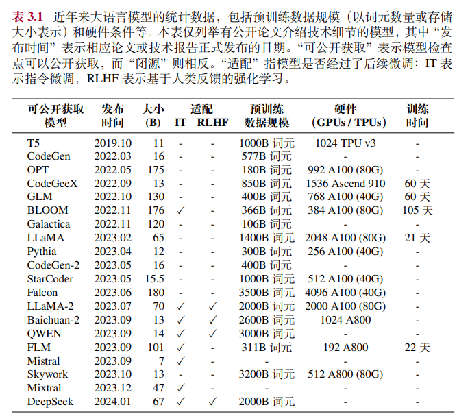
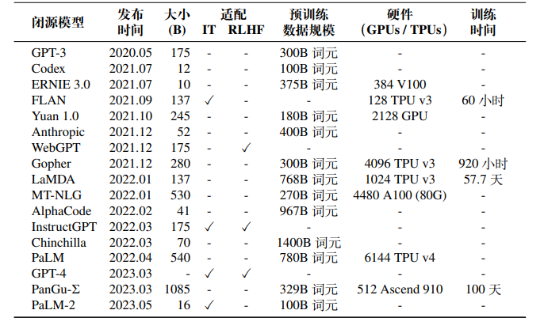
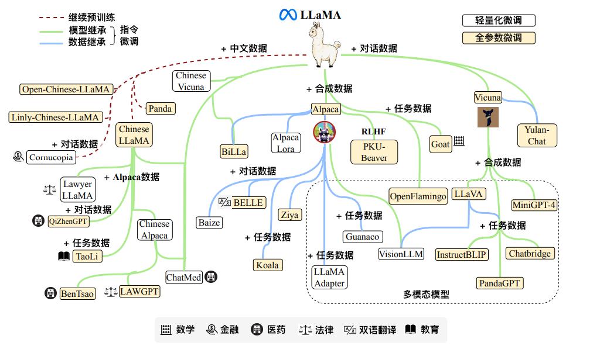
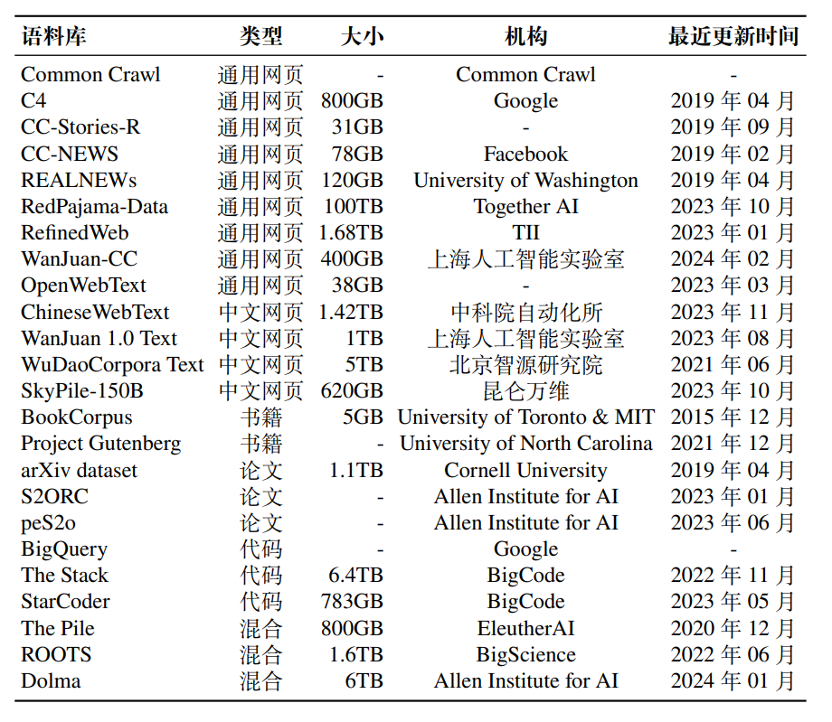

llm
读书笔记来自《大语言模型》
前言
GPT的发展历程有两点需要注意
- 可拓展的训练架构与学习范式：Transformer架构的参数规模能够不断扩大且将训练任务统一为预测下一个词这一通用学习范式
- 高质量数据，超大规模数据
大模型的训练用 4090 是不行的，但推理（inference/serving）用 4090 不仅可行，在性价比上还能比 H100 稍高。4090 如果极致优化，性价比甚至可以达到 H100 的 2 倍。，训练不行的原因是
内存和通信带宽达不到，推理可行且性价比高是因为H100溢价太高，即是性能更好但价格太贵
训练总算力（Flops）= 6 * 模型的参数量 * 训练数据的 token 数。模型的参数量和训练数据的 token 数之间也有个比例关系，这也很容易理解，只要把模型想象成数据的压缩版本就行了，压缩比总是有极限的。这里的压缩比应该是20倍。事实上，训练需要的内存包括模型参数、反向传播的梯度、优化器所用的内存、正向传播的中间状态（activation）。数据并行分别计算不同的数据计算梯度，每个GPU都有一份模型的拷贝；模型并行可用分为pipeline并行和tensor并行，pipeline并行是把模型的不同层分在不同GPU上，串成一条链；tensor并行是把一层内的attention计算和feed forward network计算等划分到多个GPU上处理，通过划分参数矩阵，将参数矩阵分到不同GPU上训练。并行训练所需要的通信带宽是短板，低带宽会导致GPU无法充分利用算力，即是用很多4090都没办法跑满，只有H100的带宽才能使得通信不会成为训练时间瓶颈，H800就是在带宽上卡了大模型训练，让张量并行难受。推理而言，流水线并行的最大缺点是 GPU 串行处理，延迟较高，导致输出 token 比较慢。而张量并行的最大缺点是传输数据量大，网络带宽低的设备不一定 hold 得住。对于推理，不管用流水线并行还是张量并行，batch size 不算高到太离谱的情况下内存带宽都是瓶颈。
训练模型需要的内存,一定要读读这篇文章
KV Cache把每一层的 K、V 矩阵缓存起来，生成下一个 token 的时候不再需要重新计算
第一章 引言
1.1 语言模型的发展历程
预测词序列中未来（或缺失）词元的概率，技术可以划分为四个阶段:
- 统计语言模型(SLM)，使用马尔科夫假设建模，根据长度为n的前缀预测目标单词，称为n-gram语言模型。当n增大时，需要估计的转移概率项指数级增长，受到维数灾难的困扰。为了解决数据稀疏的问题可用设计语言模型平滑策略如
回退估计和古德-图灵估计，但收效甚微 - 神经语言模型(NLM)，使用神经网络建模(如RNN)，用分布式词表示（词嵌入）基于隐含语义特征能够有效克服数据稀疏问题，word2vec是代表性模型
- 预训练语言模型(PLM)，早期代表是ELMo，后期代表是基于Transformer的BERT，GPT-1等，可进行
并行优化的网络架构，对硬件友好。
一般而言，编码器架构更适合处理自然语言理解任务（BERT，如完形填空），解码器结构更适合解决自然语言生成任务（GPT，如文本摘要）
- 大语言模型(PLM)，
扩展法则增加参数规模或数据规模会带来性能提升，GPT-3可以通过上下文学习的方法利用少样本数据解决下游任务，而GPT-2等小模型则不具备这一能力，称为涌现能力。为了区别这个能力的差异，学术界将这些模型命名为大语言模型
1.2 大语言模型的能力特点
与传统模型相比，llm的优势体现在:
- 较为丰富的世界知识
- 较强的通用任务解决能力，实际上基于大规模无标注文本的下一个词元预测任务本质上可以看做一个多任务学习过程（情感分类，数值计算，知识推理等）
- 具有较好的复杂任务推理能力
- 具有较强的人类指令遵循能力，输入和输出都通过自然语言表达，对打造应用服务有重要意义
- 具有较好的人类对齐能力(即要求AI系统的目标要和人类的价值观与利益相对齐)，目前广泛采用的是基于人类反馈的强化学习技术，使得模型进行正确行为的加强和错误行为的规避
- 具有可扩展的工具使用能力，GPT-4能够支持多种工具的使用，如浏览器与计算器
1.3 大语言模型关键技术概览
-
规模扩展。针对参数，算力和数据建立定量函数关系，称为
扩展法则。早期研究主要关注模型参数规模的性能优势，最近的研究则是加大高质量数据的规模（2B或7B参数的模型使用2T或3T词元仍然无法达到模型的最大容量）。规模扩展的关键是模型架构Transformer的可扩展性，特别适合大语言模的研发 -
数据工程。GPT-2中提出了大模型的路线图：在海量文本上进行下一个词预测的优化，统一的简单模式体现了**“大道至简”**的思想（深度学习端到端的学习而抛弃了多组件耦合人工设计的复杂系统也是如此）。数据工程主要包括：全面采集数据，精细清洗数据，有效数据配比与数据课程
-
高效预训练。训练需要使用各种并行策略和优化方法，包括
3D并行（数据并行，流水线并行，张量并行），ZeRO（内存冗余消除技术），专用的分布式优化框架DeepSpeed和Megatron-LM。为节省资源，需要开展基于小模型的沙盒测试实验，确定面向大模型的最终训练策略。研发过程也需要注意优化技巧，如混合精度训练等 -
能力激发。大规模数据预训练之后需要进行指令微调和提示学习。指令微调一般认为不会注入新的知识，只是训练模型学会使用已经掌握的知识进行任务求解；提示学习方面，设计合适的策略诱导llm生成正确的答案，包括上下文学习，思维连提示等，
提示工程已经成为了一个重要技术途径 -
人类对齐。互联网上开放的无标准数据可能包括低质量，事实错误等信息，需要保证大模型较好地符合人类价值观。目前代表性的对齐标准是
3H对齐标准（Helpfulness,Honesty,Harmlessness），这三个标准与人类主观感知相关，无法建立形式化的优化目标。OpenAI提出了基于人类反馈的强化学习（RLHF）将人类偏好引入llm的对齐过程，最近还出现了使用监督微调的对齐方式，简化RLHF的优化过程，如DPO算法 -
工具使用。GPT系列模型通过插件机制形成系统性的工具调用方式，这些插件可以类比为大语言模型的"眼睛和耳朵"，工具能力的使用主要是通过指令微调和提示学习两种途径实现，未经过特殊训练或缺乏提示的llm很难有效利用候选工具
对llm的基本原理还缺乏深入探索
- 某些重要能力（如上下文学习能力）的涌现仍然缺乏形式化的理论解释
- 学术界缺乏大规模计算资源来系统研究llm。llm还非常依赖于工程方法的优化（如数据清洗等），但这些技术的理论支撑还比较缺乏
- 使llm与人类价值观充分对齐是重要的科研挑战，模型能力提升后这一问题将更难解决
第二章 基础介绍
2.1 大语言模型的构建过程
llm是基于Transformer结构的神经网络模型，训练过程可以分为大规模预训练和指令微调与人类对齐两个阶段
2.1.1 大规模预训练
为了训练llm，需要准备大规模的文本数据，进行严格的数据清洗后，将数据进行词元化流，并切分成批次用于大模型预训练。目前的开源模型普遍采用2~3T规模的词元预训练，一般训练百亿模型需要百卡规模集群（如A100或80G）联合训练数月时间。预训练过程设计大量实施细节，比如数据配比，学习率调整，异常行为的早期发现等，llm的研发的核心训练训练人员能够决定模型的整体水平
2.1.2 指令微调与人类对齐
经过预训练之后的大模型更擅长文本补全，并不适合直接解决具体任务，需要对llm进行微调与对齐，使之更好地被用于任务求解，为人类服务。目前广泛使用的微调技术是"指令微调"(也叫有监督微调,supervised fine-tuning,SFT)，通过使用任务输入与输出的配对数据进行模型训练，本质属于机器学习中的模仿学习，旨在加强对标准答案的复刻。这一过程主要是对模型能力的激发，而不会注入新的知识。指令实例数据小得多，数十万到百万规模的数据就能达到不错的效果，若干台单机八卡（A100-80G）的服务器在数天时间内就能完成百亿模型的指令微调。
除了任务解决能力的提升外，还需要进行价值观对齐，InstructGPT系统介绍了如何对齐，主要是RLHF，目前也有工作试图不使用奖励模型，而使用SFT方式达到相似效果
2.2 扩展法则
llm使用的架构和预训练方法同小模型相似，但通过参数，数据，算力扩展带来的性能提升
2.2.1 KM扩展法则
OpenAI首次建立模型规模N，数据规模D，计算算力C之间的关系，给定算力预算c时，
表示非嵌入参数数量，训练数据数量和实际的算力开销，是模型的交叉熵损失，包括真实数据的熵和可优化的真实分布和模型分布的KL散度
通过实验不同数据规模（22M到23B词元）和模型规模（768M和1.5B非嵌入参数）拟合推导得到。从公式中可以推断，模型的损失随着N，D，C的增大指数减小
疑问：为什么算力能影响模型性能，是通过不同训练策略（比如混合精度训练）体现算力高了能优化性能吗?
2.2.2 Chinchilla扩展法则
DeepMind提出了一种可选的扩展法则，旨在充分利用给定的算力资源优化llm训练，针对更大范围的参数规模（5B到500B词元）和模型规模（70M到16B参数）进行实验,
是计算出的扩展系数
两种法则都可以近似表示成核心公式
当算力C给定时，a更大则应该用更多的算力提升参数规模，b更大则应该用更多的算力提升数据规模
随着算力增加，KM扩展倾向于将算力分配给模型规模（），Chinchilla倾向于等比例分配（））（即模型参数翻倍，数据量也应该翻倍，保持20倍的关系比如7B模型用140B的词元），Chinchilla认为之前的模型训练数据完全没有达到模型容量，例如175B的GPT-3只用了300B词元训练
现有的分配系数似乎没有参考意义了，例如LLaMA-2（7B）的模型用了2T的词元训练，目前还没有有效验证饱和数据规模
2.2.3 关于扩展法则的讨论
扩展法则指数形式的变化意味着会出现收益递减的情况，比如loss很小的时候再乘一个减小也不大。OpenAI的研究表明即使接近不可规约模型损失(上面提到的)，模型质量仍然能够随着规模扩展有效提升
书上这么写的，有点疑问，那到底是有没有较大提升呢
扩展法则的作用是
- 可预测性扩展：通过较小的算力资源估计大算力投入后的模型性能
- 使用小模型性能估计大模型性能，比如训练小模型确定大模型的预训练数据混合最佳比例
- 使用大模型早期训练性能估计训练完成后的性能，比如监控llm的训练过程，在早期识别出异常的性能表现
比如用大模型的算力投入小一段时间，选几个不同规模的参数训练不同的模型，拟合KM法则的参数，得到参数后可以根据公式估计参数量很大的时候模型的性能
- 任务层面的可预测性：扩展法则针对的是模型的损失，而不是实践中真实任务的表现。语言建模损失的减少并不总是意味着模型在下游任务上的性能改善，有些任务甚至会出现损失下降但任务性能变差的情况。真实任务层面的扩展法则难以寻找，GPT-4的报告表明扩展法则可用准确预测某些任务能力，但对有些任务的性能预测是非常困难的
2.3 涌现能力
涌现能力是当模型扩展到一定规模时，模型的特定任务性能突然出现显著跃升趋势，远超过平均水平。但目前缺乏理论解释，也有对涌现能力是否存在的质疑
2.3.1 代表性的涌现能力
llm的三种典型的涌现能力有
- 上下文学习(In-context Learning,ICL)，首先在GPT-3的文章中正式提出。在llm提示中提供指令和多个任务示例，无需显式训练或梯度更新即可生成预期输出。ICL取决于具体的下游任务，13B参数的GPT3在算术任务上有ICL，175B的GPT3在波斯语问答上却没有良好性能
- 指令遵循(Instruction Following)，通过
指令微调，llm在没有显式示例的情况下完成新任务，提升模型泛化能力 - 逐步推理(Step-by-Step Reasoning)，llm能利用思维链（CoT）提示策略加强推理性能，在复杂任务上（如应用数学题）上表现较好。CoT的原始论文中发现在大模型上思维链提示的效果较好，但在小模型上很难获得提升
难以统一界定涌现能力的临界规模，LLaMA2(7B)在高质量预训练和微调后也能够一定程度展现上面三个能力
2.3.2 涌现能力与扩展法则的关系
扩展法则和涌现能力在某些方面是不同的(持续改进 vs. 性能跃升)，可能在一些情况导致了不一样的发现和结论
- 扩展法则用语言建模损失衡量性能，具有可预测性，但指数形式暗示可能存在边际效应递减的情况
- 涌现能力用任务层面的表现衡量性能，不具有可预测性，随着规模扩展可能出现模型性能骤然大幅提升的现象
关于涌现能力也存在广泛争议，一种推测是涌现能力可能是由于特殊任务的设置：不联系的评估指标（生成代码使用测试数据通过率评估），有限数量的参数规模，上面的情况容易使得评测效果产生不连续的变化趋势，导致了"涌现能力"，然而实际应用中，用户就是以一种"不连续"的方式感知llm的优劣
对涌现机制的解释研究工作，较为相关的是顿悟(Grokking)，指的是训练过程中的一种数据学习模式：模型性能从随机水平提升为高度泛化
2.4 GPT系列模型的技术演变

GPT系列模型的关键要素是：
- 训练能够准确预测下一个词的Transformer（只包含decoder）语言模型
- 扩展语言模型的规模和预训练数据的规模
2.4.1 早期探索
早期OpenAI使用的是RNN，Transformer出现开始研究GPT系列模型
- GPT1，2017年google推出Transformer，2018年发布第一个GPT模型，模型规模与同时期发布的BERT-Base模型相当，性能不是SOTA
- GPT2，沿用GPT1的架构，参数规模和数据规模扩大，并尝试除去针对特定任务所需要的微调环节。为了建立通用的多任务学习框架，输入输出和任务信息都通过自然语言描述。如果无监督语言模型经过训练之后具有足够的能力恢复出全部的世界文本，那么本质上它就能解决各种任务
2.4.2 规模扩展
- 在充分探索扩展法则，数据清洗，并行训练等技术之后，GPT3将GPT2的参数规模提升了100余倍。GPT3中正式提出ICL，消除了llm针对新任务进行微调的需要，并且指出了ICL对于大模型性能增益较大，对小模型则收益较小
- GPT3证明了将神经网络扩展到超大规模可用带来大幅的模型性能提升，并且建立了以提示学习方法为基础技术路线的任务求解范式
2.4.3 能力增强
OpenAI探索了两条主要途径来改进GPT3，即代码数据训练和人类偏好对齐
- 代码数据训练：原始GPT3在复杂推理任务上能力仍然较弱，比如对编程问题和数学问题的求解不好。为了解决这一问题，OpenAI推出了Codex，基于Github代码数据上我微调的GPT模型，GPT3.5即是在基于代码训练的GPT模型基础上开发。可能的启发是对于预训练数据范围的扩展，可能并不局限于自然语言形式的文本数据
- 人类对齐：InstructGPT中提出的RLHF除了提高了指令遵循能力，还有助于缓解有害内容的生成
2.4.4 性能跃升
- chatGPT：基于GPT模型的人工智能对话应用服务，官方博客中介绍主要是沿用了InstructGPT的训练技术，但是对对话能力进行了针对性优化（原贴称chatGPT为InstructGPT的兄弟模型）。后续的版本更迭中，chatGPT进一步支持了插件机制，通过现有工具或应用程序扩展了它的功能
- GPT4：首次将输入由单一文本模态扩展到图文双模态，微软团队进行了大规模人类生成问题的性能测试，实验结果表明了GPT4震撼的性能。此外还进行了为期6个月的迭代对齐（在RLHF中增加安全奖励信号），对恶意查询更加安全。还应用了一些干预措施避免幻觉和隐私泄露，比如研究中引入了
红队攻击机制，减少有害内容生成。更重要的是GPT4搭建了完备的深度学习训练基础架构，可以在模型训练过程中通过较少的计算开销来准确预测模型的最终性能
可以看看是如何做到准确性能预测的
- GPT4V、GPT4Turbo以及多模态支持模型：更新版的GPT4引入了一系列技术升级，包括提升能力，扩展知识来源，支持更长上下文，增加新功能等。新版本的GPT还进一步增强了多模态能力，分别由不同模型支持实现。随着模型性能和支持功能的改进，极大增强了以GPT模型所形成的大模型应用生态系统
llm仍然存在局限性，例如GPT可能在某些特定上下文中给出带有事实错误的内容（幻觉），为了有效降低使用模型的潜在风险，OpenAI采用了迭代部署策略，通过多阶段开发和部署的生命周期来研发模型和产品
第三章 大语言模型资料
What We Learned from a Year of Building with LLMs是总结构建llm的经验的文章
3.1 公开可用的模型检查点或API
由于需要大量计算资源，经过预训练llm的model checkpoint对推动技术发展非常重要
3.1.1 公开可用的通用大语言模型检查点


- LLaMA系列是Meta AI发布的一系列llm，每个版本都有不同参数规模的版本。目前LLaMA已经成为了最受欢迎的开源llm之一，许多研究工作都是以其为基座模型进行微调或继续预训练得到
- ChatGLM是智谱AI和清华大学联合开发的中英双语对话模型
- Falcon是阿布扎比的技术创新研究院发布的一系列llm
- Baichuan是百川智能公司发布的开源可商用llm，有优秀的垂域应用潜力（如法律，医疗）
- InternLM是上海人工智能实验室开发的多语言开源llm
- Qwen是阿里巴巴开源的多语言llm，另外还专门为数学，代码，多模态设计了专业化模型
- Mistral是Mistral AI公开发布的7B参数llm
- DeepSeek LLLM是幻方公式发布的开源llm，也为数学，代码和多模态设计了专业化模型
- Mixtral是Mistral AI发布的稀疏混合专家模型架构的llm，是较早对外公开的MoE架构的语言模型，由于架构问题其处理速度和资源消耗都较优秀
- Gemma是谷歌发布的轻量级开源llm，专注于英语任务
- MiniCPM是面壁智能与清华大学共同研发的开源llm，同系列模型还包括了指令微调版本，DPO对齐版本和多模态版本
- YuLan-Chat是中国人民大学研发的中英双语系列对话模型
3.1.2 LLaMA变体系列
指令微调由于相对较低的计算成本，已经成为开发定制化或专业化模型的首选方法

3.1.3 大语言模型的公共API
- 语言模型API： GPT-3.5 Turbo、GPT-4和 GPT-4 Turbo
- 文本表征API：目前 OpenAI 主要提供三种文本表征的 API 接口，包括 text-embedding-ada-002、text-embedding-3-small 以及 text-embedding-3-large
3.2 常用的预训练数据集
